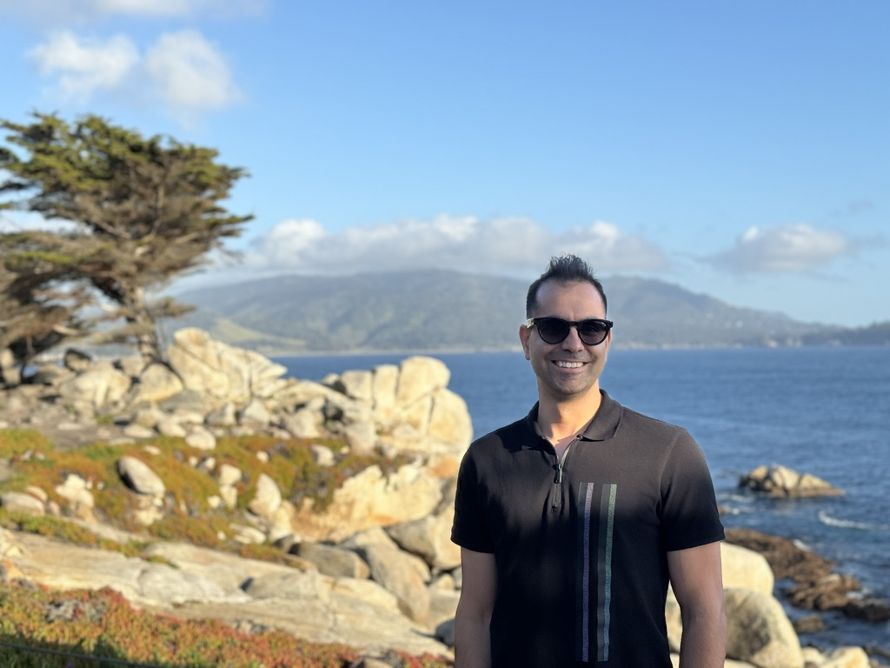

I build MCP servers, agentic pipelines, and evaluation harnesses that make scientific data trustworthy for AI — a decade in pharmaceutical R&D, shipping production systems in regulated environments.

Three roles across pharma R&D, biotech, and academic research — building production AI systems and the scientific foundations beneath them.
Applied AI engineering, agentic systems, trustworthy scientific data, and physics-informed ML. Filter by topic, then sort for where you are — a learning path from the basics, or the latest first.
Open to collaboration on applied AI engineering, agentic systems, and trustworthy data infrastructure for life sciences — and conversations about frontier AI for science.